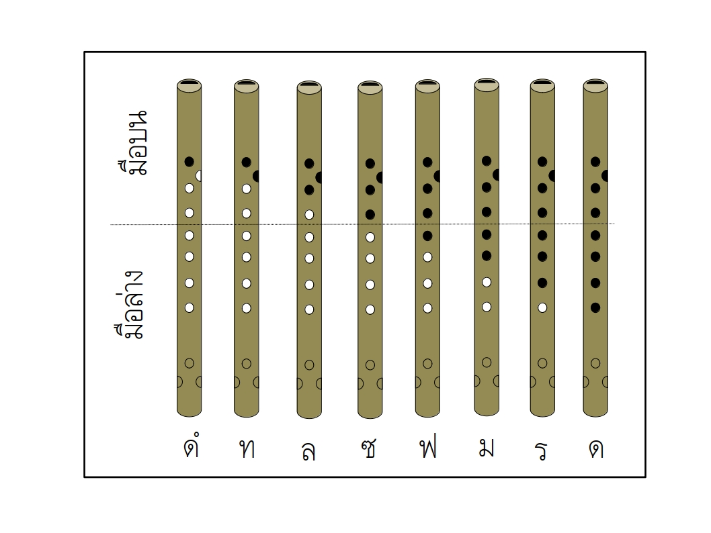

วิชา ศ22203 พื้นฐานขลุ่ยเพียงออ
1.มารู้จักกับส่วนประกอบต่าง ๆ ของขลุ่ยเพียงออกันเถอะ
วิดีโออธิบายเรื่อง ส่วนประกอบของขลุ่ยเพียงออ

2.เพลงขนมปังกรอบ (Hot Cross Buns) เสียง ท ล ซ (3 เสียง ใช้เฉพาะมือบน)
3.เพลงหนูมาลี (Merrily We Roll Along) เสียง ดํ ล ซ ฟ (4 เสียง)
4.เพลงชวา เสียง ดํ ล ซ ฟ ร (5 เสียง)